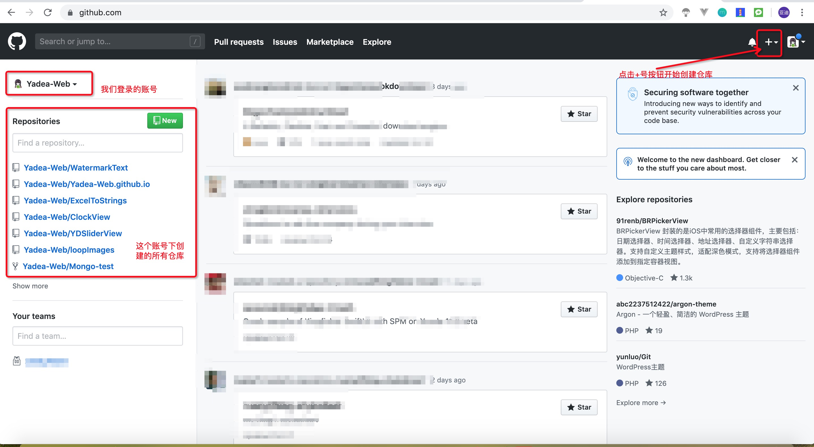
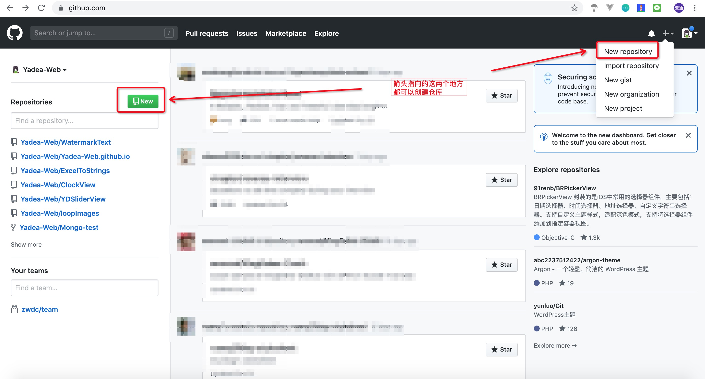
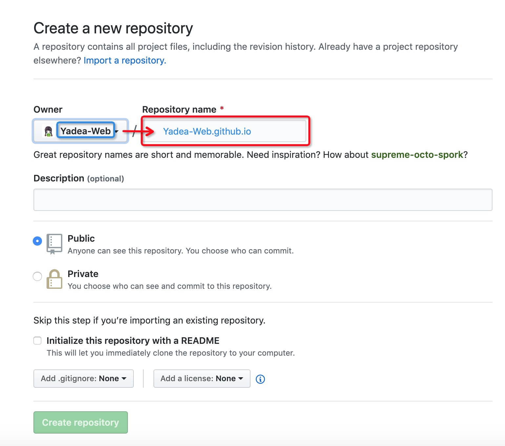
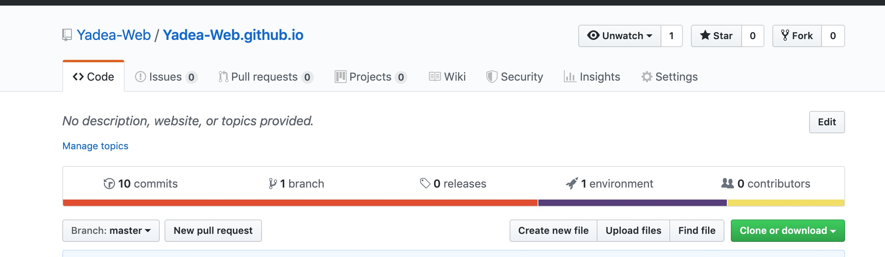
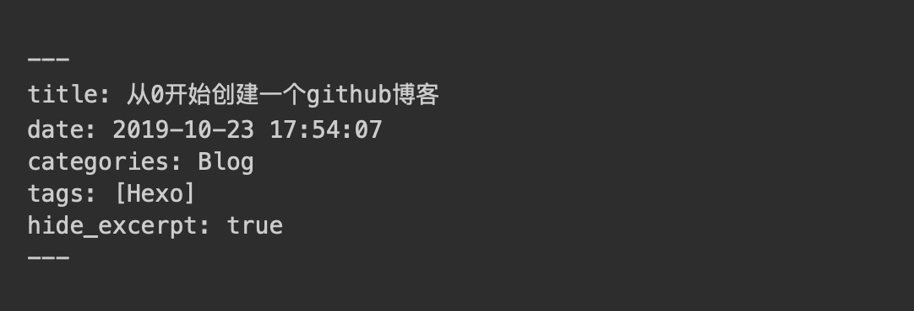

开篇大吉。
今天鼓捣了一天的github.io和hexo，终于搭建好了，记录一下过程和踩的坑。
摘要
- 创建一个github.io博客
- hexo
- hexo简介
- hexo环境搭建
- hexo创建文章
- hexo常用命令
- hexo与git的关系
- 其它注意事项
写一篇博客就像是做一盘菜，要求色香味俱全。在这个大前提下，我们需要准备好厨房、蔬菜、厨师等。
仓库就是我们的厨房，文章内容是我们的蔬菜，我们自己是厨师，hexo就是调味料啦，准备好这些我们就可以开始炒菜了！
建厨房
炒菜第一步当然是建一个厨房了，但我们是厨师不会盖房子怎么办？很简单，把我们对厨房的要求告诉建筑工人就可以了，让他们帮我们盖个厨房。
首先打开https://github.com，注册一个账号，然后登录，我们就可以在这个网站上建仓库了，大家都可以看到。
登录成功后，点击右上角的+号，开始创建一个仓库。每个人可以创建很多个不同名字的仓库，但博客地址有命名要求。


点击进入创建仓库页面，输入我们要创建仓库的名字。我们想要直接用注册的用户名访问我们的博客，仓库命名有固定的格式。在Repository name输入框中输入Owner中显示的名字，后面加上.github.io。比如你的Owner显示为zhangsan，那这个输入框就要输入zhangsan.github.io。输入完成后点击下面的Create repository按钮进行创建。

创建完成后会自动跳转到页面，如图所示。

这个时候我们的博客仓库就创建完成了（厨房已盖好），但此时页面还访问不了，因为仓库是空的（没有菜和调味品）。接下来我们就去买调味品吧！
搭模板
hexo能为我们做什么
- hexo命令行创建文章，会生成一个md文件，我们只需要修改这个文件，不需要关注样式问题
- hexo会将编写好的md文件自动生成漂亮的网页
- hexo可以直接上传到github上
- hexo自动统计标签分类等信息
- hexo为我们提供了很多漂亮的模板
安装hexo环境
hexo是一个插件（免费调味品商店），我们可以从里面找到很多漂亮的模板（好吃的调味品）来丰富我们的博客网站。
使用hexo命令行创建的文章为md格式，hexo会自动为我们生成HTML文件供用户访问，我们只需要专注于内容的编写即可。
命令行执行以下命令，全局安装hexo依赖
1 | npm install -g hexo |
使用hexo
打开官网有详细的介绍说明，简单记录一下关键步骤。
- 创建一个空文件夹（之后所有的文章都会放在这里，放一个自己喜欢的地方）
- 把该文件夹拖入命令行（或打开命令行，进入该文件夹）
- 执行
hexo init，hexo会自动为我们下载依赖文件到该文件夹下 - 执行
hexo s，查看命令行中显示的地址（一般情况下为localhost:4000），在浏览器输入该地址可以看到我们已经创建了一个博客页面，使用的是hexo默认的主题
这个主题我不喜欢，想换个更漂亮的怎么办？
在https://hexo.io/themes/这个网站里选择你喜欢的主题，然后点击图片下方的名字（点击图片是预览，点击图片下方名字是主题的仓库）进入主题仓库，按照介绍安装主题，然后更新_config.yml文件。
比如我的主题是Nayo，在命令行执行
1 | git clone https://github.com/Lemonreds/hexo-theme-Nayo themes/nayo |
然后修改_config.yml中的theme为nayo
执行hexo g后再执行hexo s刷新页面就可以看到新主题了。
写文章
hexo创建文章命令为hexo new xxx，xxx为文章链接地址，执行后在source->_post目录下可看到创建的md文档，修改这个文件中的内容即可。
文章会自动生成部分内容，这些记录了文章的信息，配置标题、创建时间、标签、分类等信息。如果没有生成标签、分类信息，自己加上即可。注意冒号后面要有空格，如果想要多个标签就[标签1, 标签2]用数组来控制。

创建页面
hexo创建页面命令为hexo new page xxx，xxx为页面链接地址，执行后在source目录下可看到创建的页面文件夹，修改对应文件夹下的index.md文档即可。
一般主题中没有关于我们、标签页时，需要我们创建一个对应页面。
hexo常用命令
hexo g生成静态文件hexo s本地开启服务hexo d传git
hexo与git的关系
hexo可以配置git地址，生成HTML文件后上传部署更新。
我们将仓库分为两个分支，master放静态文件，hexo放我们的源文件。
具体操作参考hexo搭建github分支问题
为什么不用git pull 全部推到git上？
hexo g会生成一个public文件夹，hexo d会只push这个文件夹中的内容，用户只会看到生成后的HTML文件。
用git push时，会把所有的文件都上传到git上，仓库默认的URL访问时会访问根目录的index.html文件，push代码后会导致该文件找不到。
所以我们用hexo d推我们的静态文件，用git push去把我们的源文件推到另一个分支中。
注意事项
- 修改
_config.yml后需要执行hexo g重新生成才会生效
参考文档：https://www.cnblogs.com/liuxianan/p/build-blog-website-by-hexo-github.html